Technical Growth
점진적 성장을 통한 백엔드 아키텍처의 완성
Gold Market (골드 마켓)
공동구매와 핫딜을 제공하는 Spring Boot 기반 E-Commerce 플랫폼입니다. 대규모 동시 요청 하에서의 데이터 정합성 보장, 조회 성능 개선 및 비동기 처리를 통한 시스템 간 장애 격리에 집중하여 설계하였습니다.
검색 및 조회 성능 최적화
- 데이터베이스에서 처리하던 복잡한 상품 검색 연산을 검색 엔진(Elasticsearch)으로 분리하여 조회 성능을 개선하고, 자주 조회되는 인기 상품은 빠른 메모리(Redis)에 저장하여 데이터베이스의 조회 부담을 줄였습니다. (250ms ➔ 5~10ms 단축)
비동기 이벤트 격리 및 인프라 구축
- 결제 완료 후 후속 작업(주문/알림 등)을 Kafka를 활용한 비동기 이벤트 격리로 처리하여, 결제 후속 기능에 문제가 발생해도 결제 자체는 끊김 없이 성공적으로 완료되는 효과를 얻었습니다.
- GitHub Actions 기반의 CI/CD 자동화와 Docker를 이용하여 빌드 및 배포 과정을 자동화하고 클라우드 가동 환경 구축
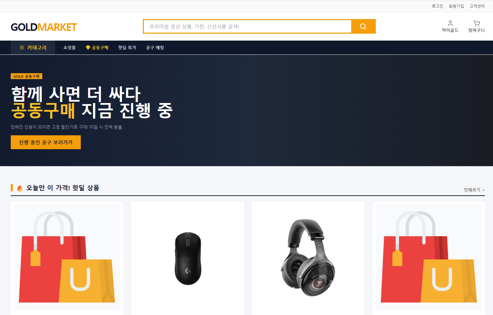
01. Spring Boot + JPA + QueryDSL 아키텍처 및 동적 쿼리 최적화
- 표준 레이어드 아키텍처 설계: Controller-Service-Repository 계층 구조를 명확하게 분리하여 각 계층의 결합도를 낮췄으며, JPA 엔티티와 영속성 컨텍스트(Persistence Context)를 최적으로 활용하여 객체 지향적인 비즈니스 로직을 구축했습니다.
- QueryDSL 도입을 통한 동적 쿼리 안정성 확보: 카테고리 필터링, 가격대 범위 검색, 최신순/인기순 정렬 등 복잡하고 동적으로 변하는 다차원 검색 조건을 안전하게 처리하기 위해 QueryDSL을 도입했습니다. 컴파일 시점에 쿼리 문법을 검증하고 자바 코드 기반으로 쿼리를 작성하여 가독성과 유지보수성을 극대화했습니다.
- 성능 최적화 및 N+1 문제 원천 해결: 대량 데이터 조회 시 다량의 추가 쿼리가 발생하는 N+1 문제를 방지하기 위해 JPA의
fetchJoin()을 적극 활용하고, 복잡한 통계 및 단순 조회 목적의 쿼리는 프로젝션(DTO 직접 조회) 기법을 활용하여 DB 및 네트워크 메모리 부하를 방지했습니다.
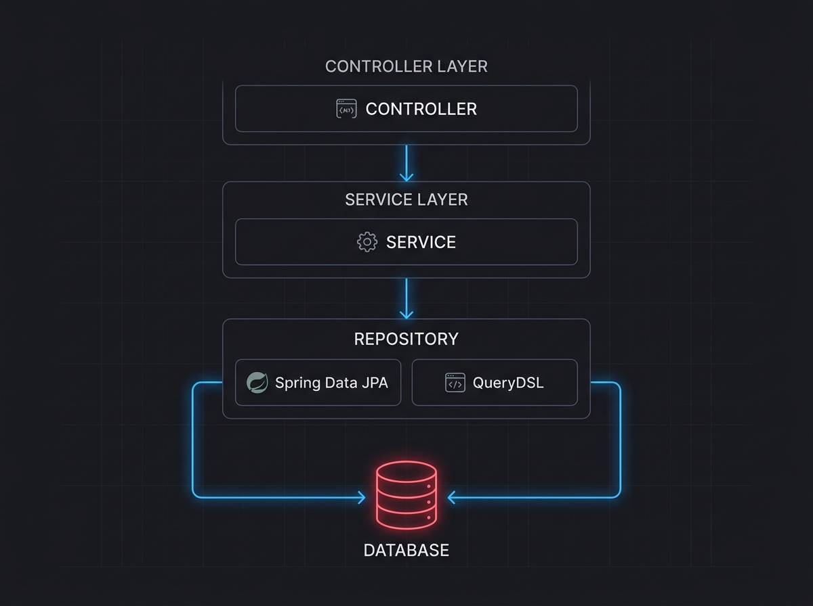
02. Redis를 활용한 추천 상품 캐싱 및 세션 스토어 적용
- 추천 상품 캐싱 도입: 인기 상품 목록 조회 시 매번 데이터베이스를 직접 읽어 발생하는 병목을 해결하기 위해 메모리 기반 저장소(Redis)를 도입하여 조회 속도를 비약적으로 단축하는 결과를 얻었습니다.
- 캐시 워밍 및 자동 갱신: 서버 기동 시 데이터를 미리 캐시에 올려두고, 스케줄러를 통해 1시간 주기로 정보를 자동 갱신하도록 설계했습니다.
- 분산 세션 스토어 구축: 다중 서버 환경에서 사용자가 접속하는 서버가 달라져도 로그인 상태를 끊김 없이 유지하고자, 중앙 세션 저장소로 공유하는 Redis 분산 세션(Spring Session Data Redis)을 구축하여 원활한 세션 공유 결과를 얻었습니다.
- 객체 직렬화 충돌 방지: 여러 서버에서 세션 데이터를 읽고 쓸 때 데이터 형식이 서로 달라 오류가 발생하는 것을 방지하기 위해(객체 직렬화 충돌), serialVersionUID 설정 및 객체 직렬화 변환 방식을 통일하여 데이터 충돌 예외를 차단했습니다.
03. 배송 관리용 고효율 DB 설계 및 외부 API 호출 최소화 모델링
- 주문/발주 배송 테이블 통합: 주문 정보와 발주 정보가 배타적 관계 제약조건(Exclusive OR / 한쪽 데이터만 필수 연결)을 충족하도록 모델을 설계하여 하나의 배송 테이블로 통합 관리했습니다.
- 공휴일 테이블 설계 및 동기화: 배송 예정일 산출 시 주말 및 공휴일 제외 처리를 위해 매번 외부 API를 호출하는 비효율을 방지하고자, 한 달에 단 한 번만 조회하여 저장하는 공휴일 테이블을 설계하여 호출을 최소화했습니다.
- 주소 위도/경도 최초 1회 저장 설계: 경로 계산 시 매번 카카오맵 API를 지속 호출하는 문제를 방지하기 위해, 최초 주소 등록 시에만 카카오맵 API로 위도와 경도를 조회하여 DB에 저장하고 이후에는 저장된 좌표 정보를 기반으로 DB 내부 연산만 수행하도록 제한했습니다.
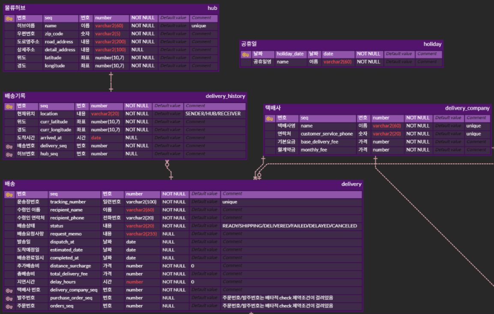
04. React 도입으로 비동기 부분 렌더링과 UI 재사용성 증가
마이페이지의 주문 목록, 실시간 배송 추적, 그리고 주문 취소/반품/교환/환불 신청 내역 등 복잡한 비즈니스 상태 변화에 따라 화면 요소가 유기적으로 변해야 하는 구조를 React 컴포넌트로 재사용하여 효율성을 높였습니다.
주문 상태, 환불 승인 여부 등 다양한 조건부 값에 따른 렌더링 분기를 State와 Props를 통해 알맞게 구현하고 JSON 비동기 통신을 매끄럽게 연동하였습니다.
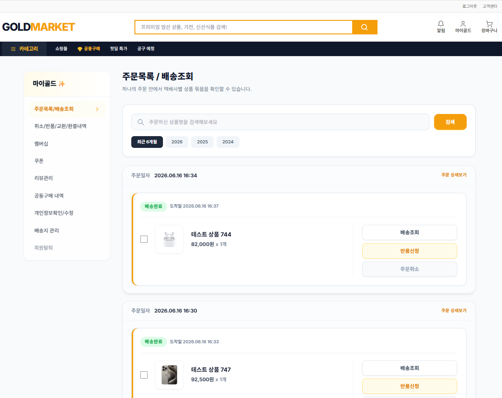
05. 브라우저 뒤로가기 시 최근 조회 데이터 미반영 문제 해결
상세 페이지를 방문한 후 브라우저의 '뒤로가기'를 눌렀을 때, 최근 본 상품 목록이 즉각 갱신되지 않고 브라우저에 캐시되어 구버전 화면이 유지되는 불편함이 있었습니다.
이를 해결하기 위해 브라우저의 뒤로가기 기본 동작(캐시 복원)을 가로채고 정지한 뒤, 페이지 진입 이벤트를 감지하여 최근 본 상품 영역만 비동기 방식으로 동적 호출하여 새로고침 없는 History API 연동 주소 동기화를 구축해 즉각적인 데이터 일관성을 달성했습니다.
06. 공동구매 자동 참여 전환 대기열 구축
공동구매 선착순 참여자가 결제를 취소하거나 이탈하는 경우 대기자에게 순차적으로 자동 기회가 넘어가도록 자동 관리 시스템을 설계했습니다.
취소 발생 시 FIFO(선입선출) 구조의 대기열에서 첫 번째 대기자에게 한정 기간의 결제 기회를 부여하고 기간 초과 시 자동 회수하여 다음 사람에게 넘기는 방식을 Spring Scheduler를 활용한 백그라운드 주기 작업 및 Spring Data JPA의 트랜잭션 전파 기술을 활용해 구현하여 운영진의 개입 없는 재고 소진 자동화 효과를 얻었습니다.
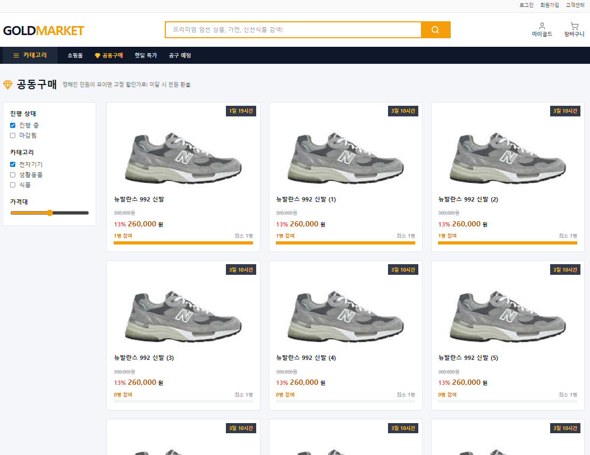
07. 공동구매 동시 참여 요청 및 반복 호출 제어
인기 공동구매 개시 시 다수의 사용자가 동시에 접속하여 발생하는 서버 과부하와 재고 초과 판매 문제를 막기 위해 이중 보안 구조를 설계했습니다.
계정 및 IP별 단시간 초과 반복 요청을 앞단에서 Spring Data Redis의 StringRedisTemplate fixed-window 카운터 메커니즘을 이용한 Rate Limiter로 즉시 차단하여 DB 부하를 예방하고, 최종 요청에 데이터베이스 비관적 락(Pessimistic Lock)을 적용하여 단 하나의 초과 판매도 발생하지 않도록 정합성을 지켰습니다.
08. 매출 통계 집계 최적화 및 대량 쿠폰 발급 처리
매출 대시보드 조회 시 결제 정보와 상품 정보를 가져올 때 발생하는 다량의 조회 쿼리(N+1 문제)를 해결하고자, 단 한 번의 조인 쿼리로 묶어 처리함으로써 조회 속도를 높였습니다.
금융 정산 과정에서 발생하는 금액의 소수점 연산 오차를 예방하기 위해 BigDecimal 타입을 사용하여 계산의 정합성을 보장했습니다. 또한, 수천 명의 회원에게 쿠폰을 대량 발급할 때 일어나는 데이터베이스 병목을 해결하기 위해 JDBC Batch Insert 방식을 연동하여 등록 속도를 개선했습니다.
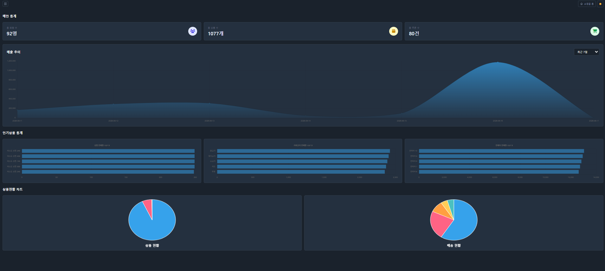
09. AI 챗봇과 실시간 상담사 1:1 채팅 전환 연동
실시간 고객 문의 대응 시 AI 챗봇의 자동 답변만으로는 해결하기 어려운 복잡한 요구사항을 즉시 처리할 수 없는 문제가 있었습니다. 이를 해결하기 위해 상담사 참여를 즉시 감지하여 AI 동작을 자동 멈추고 1:1 실시간 대화로 자연스럽게 연결하는 WebSocket / STOMP 통신을 도입하여 불필요한 AI 호출 비용을 절감하고 실시간 상담 전환 효율을 높이는 효과를 얻었습니다.
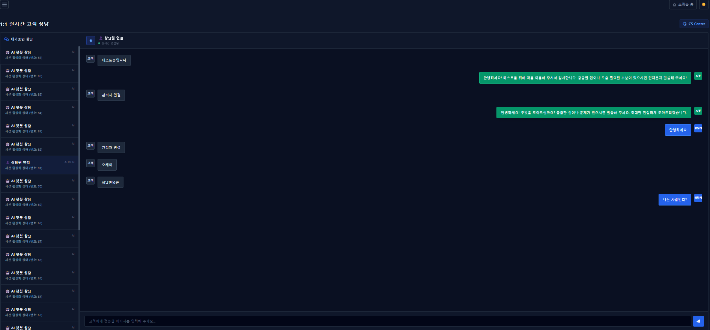
10. Elasticsearch 기반 상품 검색 및 조회 성능 최적화
다양한 정렬 조건과 필터링 하에서 데이터베이스 검색 조회 성능이 떨어지는 문제를 단계별로 개선했습니다.
- 대표 이미지 비정규화: 상품 대표 이미지 컬럼이 상품 테이블에 존재하지 않아 매 검색 시 조인 부하가 걸리던 것을 상품 테이블 컬럼 추가를 통해 개선했습니다. (250ms)
- 데이터베이스 인덱싱: 오라클 데이터베이스 인덱스 설정을 통해 검색 필터 및 정렬 조건 성능 최적화를 진행했습니다. (70ms)
- Elasticsearch 도입: 검색 데이터 조회를 전용 검색 엔진(Elasticsearch)으로 완전 이관하여 데이터베이스 부하를 제로화했습니다. (10ms)
Elasticsearch 도입을 통해 검색 연산 완전 이관, Painless Script 정렬 튜닝, 한글 형태소 Nori 분석기 적용, CUD 발생 시 인덱스 비동기 동기화 구성을 구축하여 최적화했습니다.
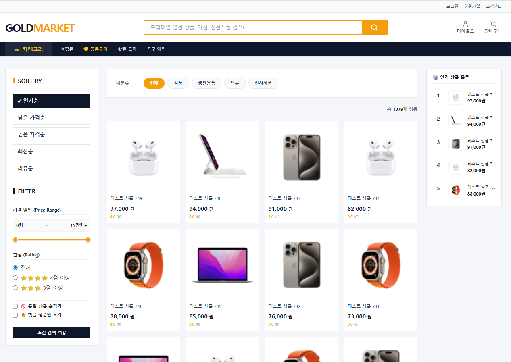
11. 주문 취소 동시성 제어 및 외부 결제 환불 멱등성 보장
환불 도중 사용자의 연속 클릭으로 중복 결제 취소가 발생하거나, 동시 실행되는 Spring Batch 배송 상태 변동 배치 작업과 취소 요청이 충돌하여 이미 배송된 주문이 취소되는 정합성 문제가 있었습니다.
- 화면 단 요청 제어: 화면 단에서 취소 요청 즉시 버튼을 잠금 처리하여 물리적 중복 요청을 방지했습니다.
- 백엔드 비관적 락: 백엔드에서 주문 데이터 조회 시 DB 비관적 락(Pessimistic Lock)을 적용하여 충돌하는 요청들을 줄 세워 순차 처리하도록 했습니다.
- 영속성 컨텍스트 최신화: Spring Batch 배송 배치 프로세스가 반영한 최신 데이터를 조회하기 위해, DB에서 다시 데이터를 가져와 영속성을 강제로 최신화한 후 주문 취소가 가능한 상태인지 검증했습니다.
- 외부 API 멱등성 보장: 외부 결제 API를 통해 환불 처리를 연동하되, 배송 시스템과의 상태 충돌을 조율하고 이미 결제 대행사(PG)에서 취소가 끝난 건에 대해서는 에러를 실패로 처리하지 않고 성공으로 흡수 처리하여 트랜잭션을 정상 리턴했습니다.
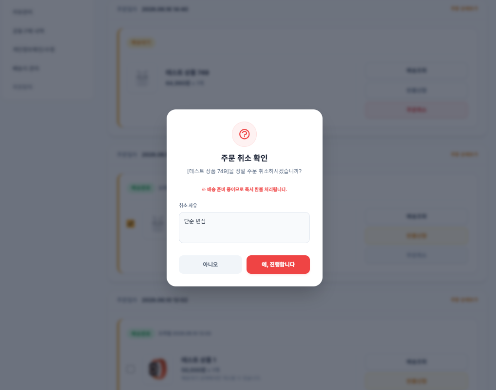
12. 분산 이벤트 메시징 큐를 활용한 결제 완료 비동기 이벤트 처리
결제 승인 시 주문 처리와 알림 등의 여러 기능들이 동기로 묶여 있어, 후속 과정의 지연이나 에러가 결제 성공 자체에 지장을 주던 문제가 있어 비동기 이벤트 분리 방식으로 전환하였습니다.
- 트랜잭션 1차 완료: 결제 승인이 완료되면 결제 데이터를 저장하는 트랜잭션을 먼저 성공시킵니다.
- 트랜잭션 커밋 이벤트 감지: 트랜잭션 커밋 완료가 확실하게 성공한 이후에 이벤트를 감지하여 분산 메시지 브로커(Apache Kafka)로 메시지를 발행합니다.
- 컨슈머 비동기 수신: 수신 서버가 메시지를 감지하여 주문 생성과 알림 처리를 독자적인 별개의 비동기 트랜잭션으로 가동하여 결제 성공 자체는 안전하게 완료되는 장애 격리 효과를 얻었습니다.
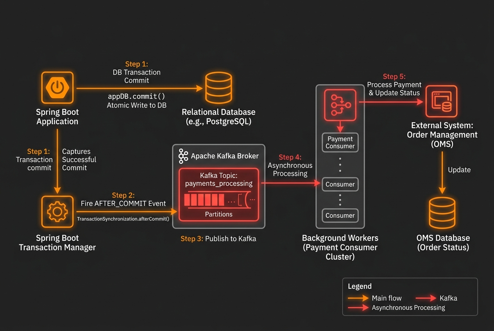
13. GitHub Actions와 Docker를 이용한 CI/CD 및 EC2 인프라 구축
메모리 용량이 제한된 클라우드 배포 서버(AWS EC2) 내부에서 직접 코드 빌드를 진행할 시 메모리 부족으로 전체 서비스가 중단되는 문제가 있었습니다.
이를 해결하고자 빌드 작업을 외부 GitHub Actions 환경으로 분리하여 처리하고, 빌드가 완료된 이미지를 도커 레지스트리(Docker Hub)를 통해 서버에서 다운로드 받아 Docker Compose 컨테이너로 실행하게 함으로써 클라우드 메모리 낭비를 줄였습니다.
코드 변경사항이 반영되면 GitHub Actions로 자동 빌드 및 이미지 생성 후, 대상 서버에 원격 접속하여 Docker Compose를 이용하여 배포하도록 구성해 안정적으로 자동화 배포 파이프라인을 완료했습니다.
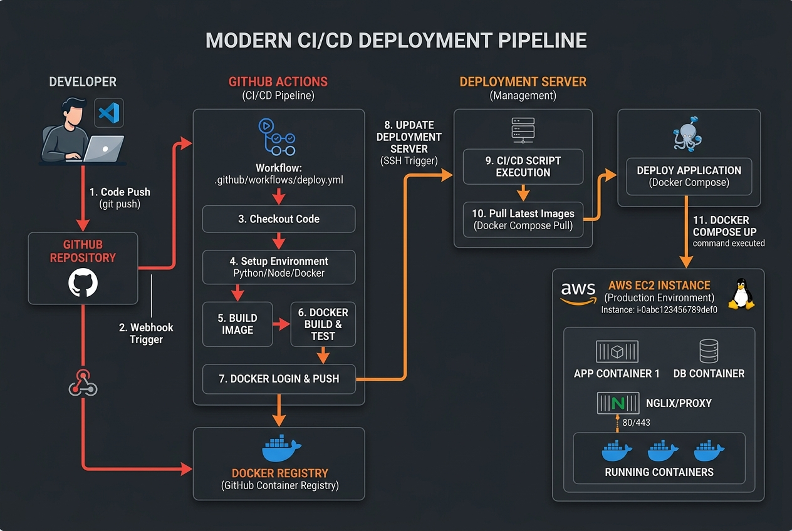
14. 프로젝트 완수 후기 및 개발자의 역할에 대한 고민
GitHub Actions CI/CD 구축 중 발생한 메모리 부족 문제와 AWS EC2 배포 도중 마주했던 많은 오류들을 하나씩 분석하고 해결해 보며 서버와 배포에 대하여 경험할 수 있었습니다. 특히 Git에 외부 연동용 API Key가 노출되는 사고가 발생하여 Git History를 수정함과 동시에 환경 변수 격리와 같은 보안 제어의 중요성을 직접 체험하고 배웠습니다.
최근 AI가 코드를 빠르게 짜주는 바이브 코딩 시대를 맞아, 단순 코드 구현에 있어서는 AI를 활용할 수 밖에 없는 시대가 되었습니다. 그러나 시스템 구조 설계나 검색 성능 최적화 시 비용을 감수하고서라도 어느 수준까지 고도화해야 할지 방향을 결정하는 등 고객의 요구사항과 비용문제 등에 대한 트레이드 오프를 결정하고 설계하는 능력이 앞으로 개발자의 필수 역량임을 느끼게 되었습니다.
아무것도 모르는 개발자는 AI가 있더라도 적절한 비용을 들여서 최선의 기능을 구현할 수 없기에, 인프라나 분산 시스템 등 다양한 기술적 깊이를 알고 트레이드 오프에 대하여 고민해본 개발자가 될 것입니다.
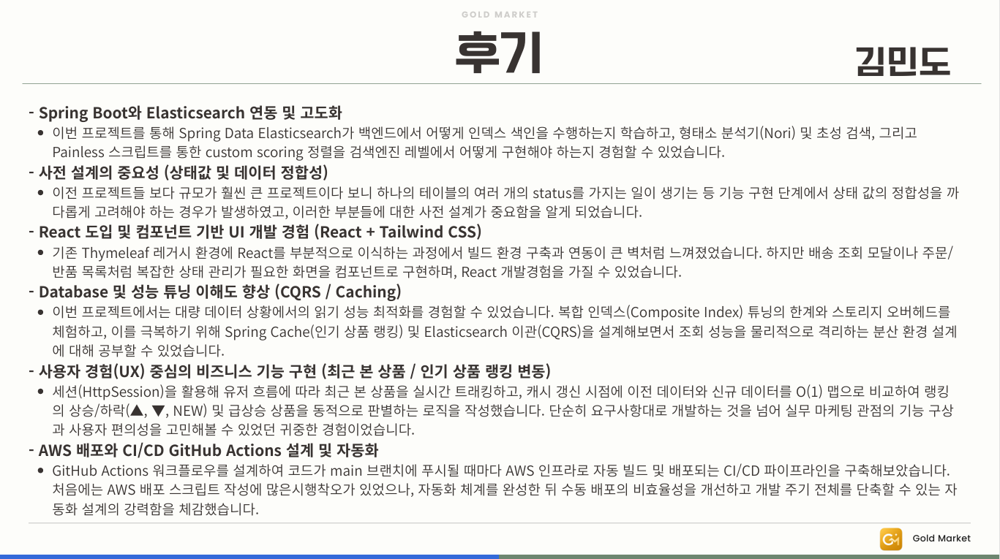
Jesiyo (실시간 경매)
실시간 비동기 통신과 동시성 제어를 통해 경매 플랫폼을 구현했습니다. 대량 트래픽 상황에서 발생가능한 문제점을 경험하고 해결하였습니다.
비동기 및 실시간 기술
- WebSocket/STOMP 기반의 실시간 입찰 및 채팅 시스템 구축
- Redis 인메모리 캐싱을 통한 최고가 정보 실시간 조회 속도 390배 개선
성능 및 동시성
- Redisson 분산 락을 통한 다수 사용자 입찰 시 데이터 정합성 확보
- k6 부하 테스트를 통한 에러율 1% 미만 달성 및 시스템 한계 검증

01. Spring + MyBatis 아키텍처 및 SQL 매핑 구현
- Spring & MyBatis 연동 아키텍처: Spring 5 IoC 컨테이너 환경에서 MyBatis 데이터 매퍼 프레임워크를 유기적으로 결합하여 계층 분리를 달성하였으며, 쿼리 매퍼(XML)를 통해 자바 코드와 데이터베이스 쿼리를 완전히 분리해 가독성과 유지보수성을 극대화했습니다.
- 세밀한 SQL 제어 및 성능 최적화: 실시간 경매 최고가 조회, 입찰 기록 누적, 회원 예치금 차감 등 트랜잭션 단위로 실행되는 핵심 SQL에 대해 오라클에 튜닝된 쿼리를 직접 작성하고 실행 계획을 분석하여 디비 부하를 줄였습니다.
- 동적 쿼리 매핑을 통한 검색 유연성 확보: 카테고리 필터링, 진행 상태별 경매 분류 등 조건에 따라 쿼리가 동적으로 변경되어야 하는 요구사항에 대응하기 위해 MyBatis XML 매퍼에서
<if>,<choose>,<where>등의 동적 SQL 태그를 적극 활용했습니다.
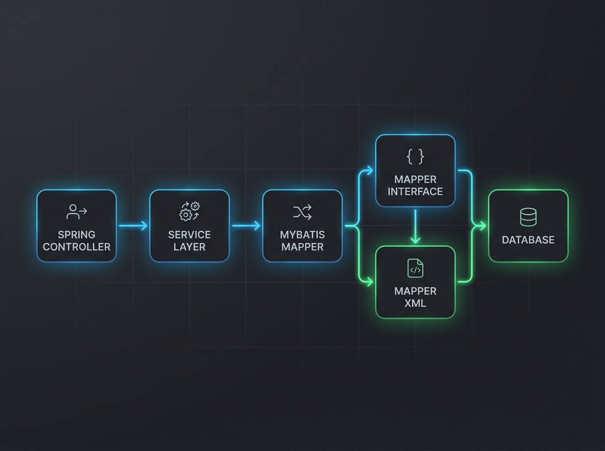
02. 시스템 아키텍처 (System Architecture)
클라이언트의 요청이 WAS(Tomcat)를 거쳐 Spring 컨트롤러로 라우팅되는 전체 흐름도입니다.
일반 HTTP 요청과 WebSocket/STOMP 프로토콜을 분리하여 처리합니다. 특히 고부하 환경에서의 동시성 제어 및 병목 해소를 위해 Redis 인메모리 캐시와 Redisson 분산 락을 설계하였으며, 결제(Toss) 및 이메일(SMTP) 등 외부 API 연동을 포함한 구조로 설계했습니다.
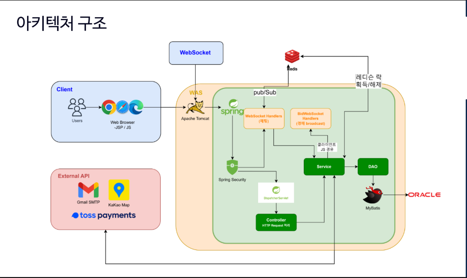
03. 일반 경매 목록: 클라이언트 단 타이머 렌더링
다수의 경매 물품이 동시에 진행되는 목록 화면입니다. 남은 시간을 실시간으로 보여주기 위해 서버에 주기적으로 요청(Polling)을 보내면 엄청난 트래픽 부하가 발생합니다.
이를 해결하기 위해 클라이언트 자바스크립트의 setInterval을 활용하여 브라우저 단에서 독립적으로 남은 시간을 계산하도록 설계했습니다. 마감 1시간 미만 시 텍스트 색상을 붉은색으로 변경하고 깜빡임(animate-pulse) 효과를 주어 긴박함을 줄 수 있는 UI/UX를 구현했습니다.
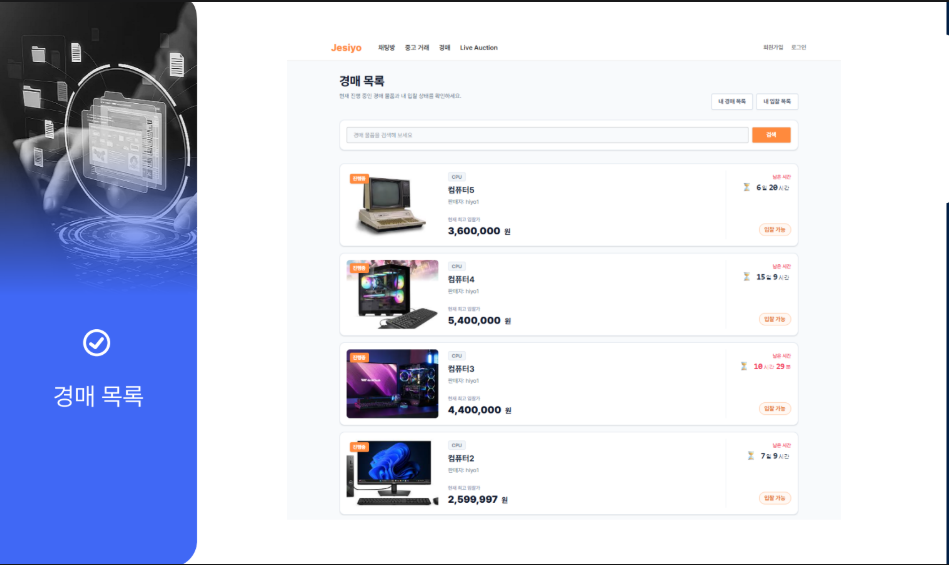
04. 일반 경매 상세: 프론트엔드 방어 로직 및 부분 렌더링
단일 경매 물품의 상세 정보를 확인하고 입찰을 진행하는 화면입니다. 서버 리소스를 보호하고 사용자 경험을 최적화하기 위해 다음과 같은 클라이언트 단 처리를 구현했습니다.
- Double Submit 방지: 입찰 버튼 클릭 즉시
disabled = true처리하여 중복 클릭을 1차적으로 차단했습니다. - 사전 유효성 검사: 서버 요청 전 브라우저 단에서 금액을 선행 비교하여 최고가를 초과하는 금액이 아니라면 입찰을 1차적으로 차단합니다.
- 웹소켓과 부분 렌더링: 웹소켓(WebSocket)으로는 'auctionSeq'라는 가벼운 데이터만 브로드캐스팅 받아, 실제 갱신할 데이터는 Fetch API를 통해 JSON으로만 받아옵니다. 이후 자바스크립트를 이용해 최고가와 최신 입찰 내역 등 변경이 필요한 DOM 노드만 타겟팅하여 동적으로 렌더링함으로써 사용자 경험을 최적화하고 경매에 참여중인 사용자들이 모두 같은 입찰가를 볼 수 있도록 하였습니다.
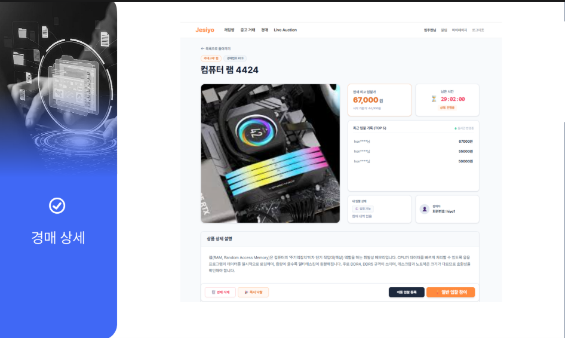
05. 실시간 라이브 경매: 동시성 제어 및 캐싱 적용
실시간 스트리밍 방송 환경을 가정하여 수많은 시청자가 짧은 순간에 동시에 입찰을 시도하는 고부하 환경입니다.
이러한 집중적인 트래픽 상황에서도 최고가 입찰 로직을 지키기 위해 Redisson 분산 락을 적용하여 데이터 정합성을 철저히 보장했습니다. 또한, 락으로 인한 대기 시간(병목)을 상쇄하고 방송과 입찰 간의 지연을 없애기 위해 Redis 인메모리 캐싱을 도입했습니다.
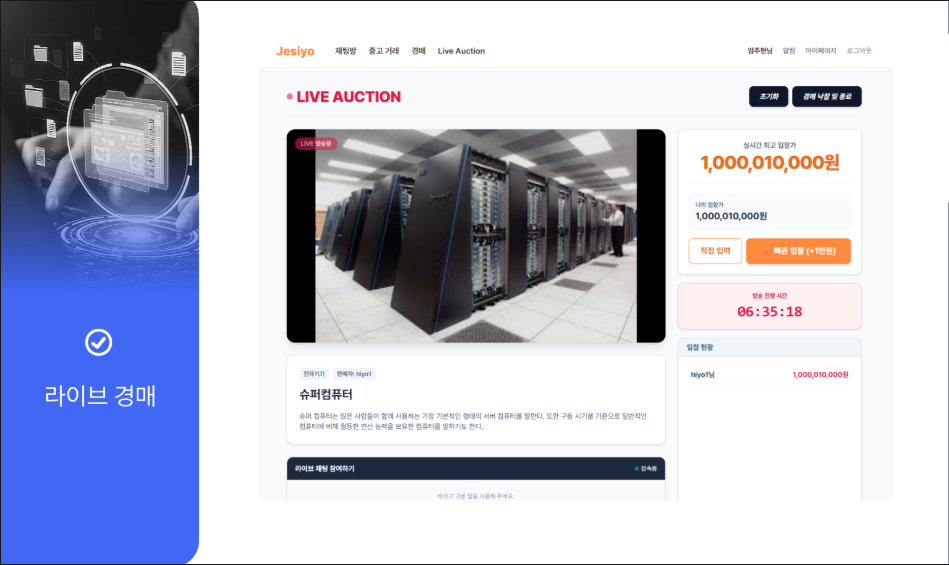
06. 경매마스터 테이블 설계
초기 설계에서는 포인트 락(입찰 시 예치금 락을 걸기위함) 테이블에 경매테이블FK와 라이브경매테이블FK 간에 배타적 참조 제약조건을 두어 무결성을 확보 -> 경매 테이블, 실시간 경매 테이블의 PK역할을 하는 seq가 auction_master의 PK만을 참조하도록 구조를 개선. 이는 아래와 같은 이점을 갖게됩니다.
- PK를 상속하는 모양새로써 객체지향적 다형성(Polymorphism) 구현
- 확장에는 열려있고 변경은 최소화하는 구조로써 OCP원칙 구현
- 전역 식별성 보장
다만 해당 설계의 경우 이후 다시 생각해보니 새로운 경매 형태가 추가될 가능성이 적다면 조회 성능이 저하되기 때문에 auction_master 테이블을 굳이 만들지 않는 것이 좋을 수도 있겠다는 생각이 들었습니다.
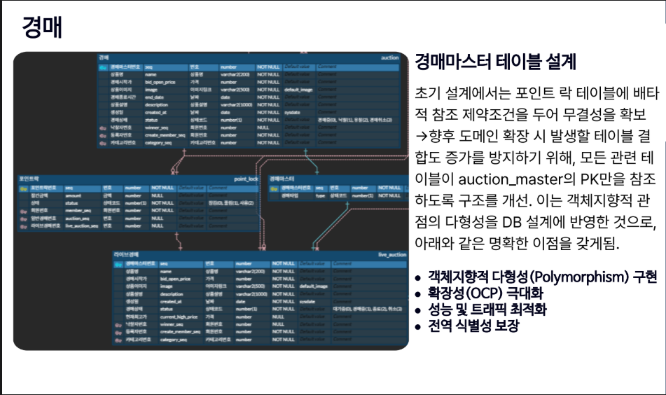
07. 입찰기록 테이블 설계
- 회원과 경매테이블 간의 다대다 관계를 해소하고 기록을 남기기 위해 입찰기록 테이블 설계
- @Transactional 사용: @Transactional을 사용하여 두 쿼리를 실행하는 경우 하나의 쿼리만 시행되는 일이 없도록 하여 데이터 정합성을 보장하였습니다.
- 복합 인덱스 적용: 새로운 최고가 입찰시 입찰기록 테이블에서 기존의 최고 입찰가의 status를 0에서 1로 변경하기 위해 대량의 입찰기록 누적 데이터의 status를 전부 조회하는 경우 발생 가능한 성능 저하를 방지하기 위해 (auction_seq, status) 복합 인덱스를 적용했습니다. 애플리케이션 계층의 쿼리문 수정 없이 오라클 옵티마이저(Optimizer)가 자체적으로 인덱스를 참고하게 됩니다.
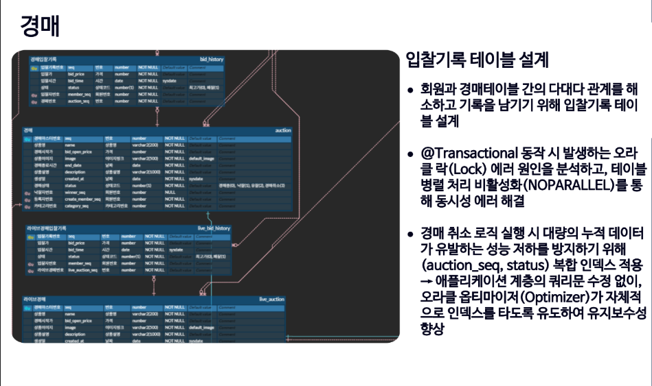
08. K6 부하 테스트 1: 동시성 이슈 및 분산 락
K6 부하 테스트(K-1000: 1000명이 0.1초 간격으로 10초간 입찰을 누르는 부하) 중 다중 입찰 시 동일 가격이 중복 입찰되는 이슈를 발견했습니다.
이를 해결하기 위해 Redisson 분산 락을 도입하여 동시 접근 스레드를 제어했습니다. 그 결과, K-5000의 매우 높은 부하 환경에서도 최고가 입찰 로직이 무시되지 않고 지켜지며 데이터 무결성을 확보할 수 있었습니다.
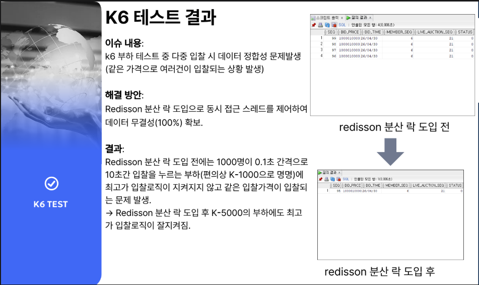
09. K6 부하 테스트 2: 분산 락 병목 및 캐싱 전환
분산 락 도입으로 무결성은 확보했으나, 락 대기 시간(Wait Time) 증가로 인한 전체 응답률 저하 이슈가 발생했습니다.
이를 극복하기 위해 기존 DB를 직접 조회하던 최고가 검증 로직을 Redis 인메모리 캐싱으로 전환했습니다. 락으로 인한 페널티를 인메모리 I/O 속도로 상쇄한 결과, K-1000 부하 기준 응답률이 92.93%에서 98.61%로 상승하였습니다.
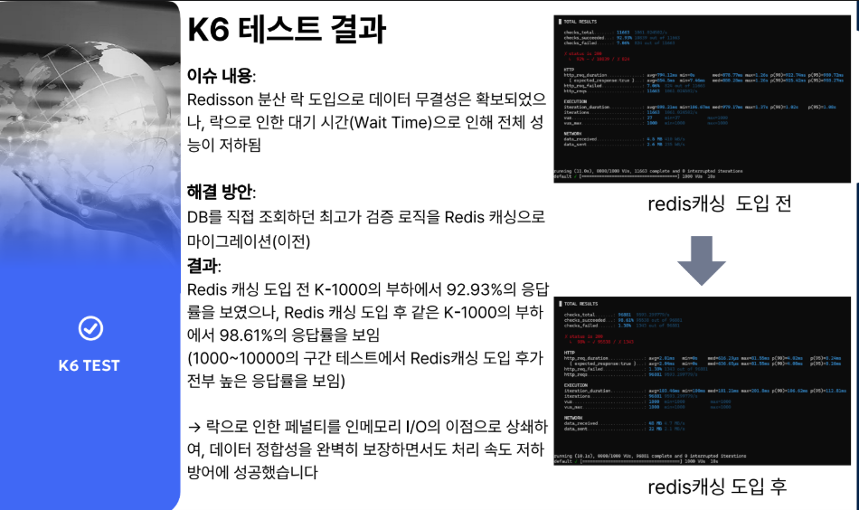
10. K6 부하 테스트 3: 최종 성능 개선 지표
Redis 인메모리 캐싱 도입을 통해 매번 DB 디스크를 조회하던 병목 현상을 제거한 최종 결과 지표입니다.
- 평균 응답 속도: 794.12ms ➔ 2.01ms (약 390배 단축)
- 초당 처리량(TPS): 1,061건 ➔ 9,593건 (약 9배 증가)
- 에러율 방어: 락 대기 타임아웃 감소로 에러율 7.06% ➔ 1.38%로 대폭 하락
- 응답률 100%을 위해서는 메시지큐의 도입이 필요할 것으로 보입니다. 해당 프로젝트에서는 시간부족으로 도입하지 못하여 아쉬움이 남습니다.
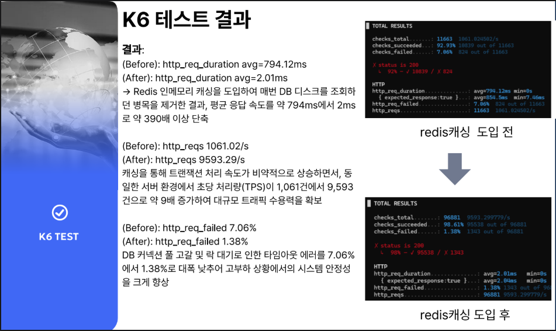
11. 프로젝트 후기
이번 프로젝트는 단순한 구현을 넘어 '시스템 아키텍처 설계'와 '동시성 제어'라는 백엔드의 핵심 과제를 깊이 있게 다룬 경험이었습니다. 특히 분산 락과 인메모리 캐싱을 도입하며 무결성과 응답 속도 문제를 직접 해결하고 성능을 대폭 개선했습니다.
그리고 AI 시대의 '개발자의 역할'에 대해 고민해보게 되었습니다. CSS작업과 처음 써보는 Redis 코드 구현에서 Ai가 시간을 많이 단축해준 덕분에 아키텍처 설계와 성능개선에 집중할 수 있었지만, 다양한 비즈니스 상황에 따라 발생가능한 문제점을 예상하고 변경점에 따른 트레이드 오프(Trade-off)를 결정하고 사람들을 설득하는 것은 결국 개발자의 몫이었습니다. 그렇기에 Ai시대를 살아가는 개발자로써 Ai가 만들어준 의견을 맹목적으로 받아들이는 것이 아니라, 집요하게 의심, 비판하고 학습해야한다는 생각이 들었고, 집요하게 의심하고 질문하는 것은 저의 가장 큰 장점입니다.
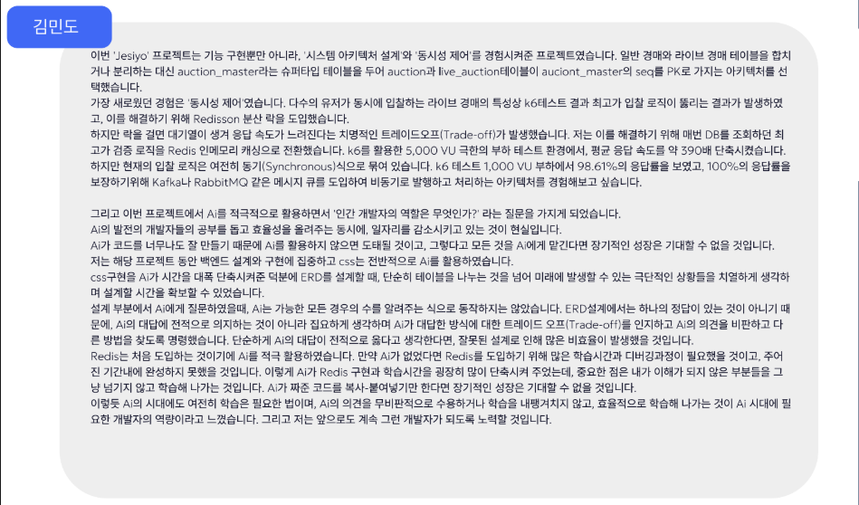
DeveryTime (학습 관리)
Servlet/JSP 환경에서 MVC 구조로 설계하여 게시판 프로젝트를 진행하였습니다.
방어적 프로그래밍
- 단일 책임 원칙(SRP) 기반의 MVC 구조 설계로 코드 유지보수성 향상
- 스터디 정원 수정 시 현재 참여 인원수와 비교 검증하는 서버단 방어 로직 구축
데이터 무결성 관리
- 회원 탈퇴 시 상태만 변경(soft delete)되는 환경을 고려한 연관 데이터 자동 동기화 트리거 구현
- 스터디 권한별(방장/멤버) 접근 제어 및 유효성 검사 로직 설계
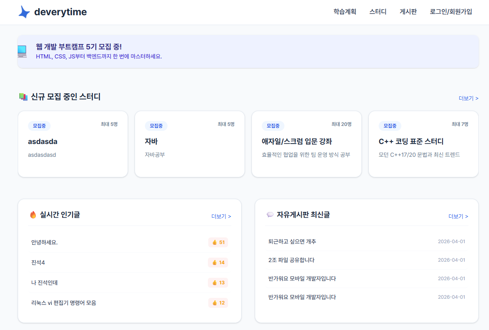
01. MVC 아키텍처 및 패키지 구조
JSP Model 2 방식의 MVC 아키텍처를 도입하여 단일 책임 원칙(SRP)을 준수했습니다.
요청 흐름 제어(Controller), 비즈니스 로직(Service), 데이터 접근(DAO) 계층으로 패키지를 명확히 분리함으로써 코드의 결합도를 낮추고 유지보수성을 향상시켰습니다.

02. 스터디 목록
Tailwind CSS 기반의 카드 UI로 스터디 목록을 구현하였습니다.
특히 사용자가 자유롭게 입력하는 스터디 소개 글이 UI를 망가뜨리지 않도록, line-clamp 속성을 적용하여 텍스트 길이를 제어했습니다. 또한 서버 단의 상태 변수(모집중, 참여중 등)를 JSTL로 평가하여 해당 스터디의 상태에 따라 뱃지를 표시하였습니다.

03. 스터디 상세: 권한별 분기 및 오작동 방지 UX
서버에서 인가받은 권한 정보(isManager, isMember의 값)를 바탕으로 프론트엔드 노출 버튼(수정, 가입, 탈퇴, 추방 등)을 제어했습니다.
또한 '방장 위임'이나 '멤버 추방' 등 데이터베이스에 변경을 가하는 핵심 로직에는 네이티브 confirm()을 활용하여 확인단계를 만들었습니다. 이를 통해 사용자의 실수를 방지하는 UX를 구현하였습니다.

04. 캘린더 연동: 라이브러리 커스터마이징 및 데이터 바인딩
FullCalendar.js 라이브러리를 연동할 때, JSTL을 이용해 서버 단의 DTO 리스트를 자바스크립트 이벤트 객체 배열로 렌더링하였습니다.
또한, 기본 캘린더 UI의 막대(Event bar) 패딩이 커서 여러 일정이 겹칠 때 화면이 복잡해지는 문제를 해결하기 위해, CSS 오버라이딩을 통해 이벤트 막대의 높이와 마진을 압축하고 마우스 호버(Hover) 시 시각적 포커싱 효과를 주어 가독성을 개선했습니다.

05. To-Do 리스트: 비동기 통신(AJAX)과 상태 정합성
할 일의 완료 상태를 체크할 때 페이지 전체가 새로고침되어 사용자 경험이 저하되는 것을 막기 위해 Fetch API를 이용한 비동기 통신을 구현했습니다.
브라우저의 즉각적인 체크박스 반응은 허용하되, 실제 완료를 뜻하는 전체 UI(취소선 및 배경색)의 변경은 서버의 DB 업데이트 성공 응답을 받은 직후로 지연시켰습니다. 반대로 서버 통신에 실패할 경우, 자바스크립트로 체크박스 상태를 즉시 원상 복구(Rollback)시켜 클라이언트와 서버 간의 데이터 정합성을 보장했습니다.

06. 데이터 무결성 및 관계 모델링
회원과 스터디의 N:N 관계를 해소하기 위해 '스터디 구성원' 매핑 테이블을 설계했습니다.
회원번호 + 스터디번호에 Unique 제약조건을 걸어 중복 가입을 방지하고, 부모 스터디 삭제 시 관련된 할 일 및 구성원 데이터가 고아 데이터로 남지 않도록 ON DELETE CASCADE를 적용했습니다.

07. 논리적 삭제 및 동기화 트리거
서비스 정책 상 회원 탈퇴 시 데이터가 물리적으로 삭제되지 않고 상태(status)만 '탈퇴'로 변경됩니다. 따라서 ON DELETE CASCADE를 활용할 수 없었습니다.
이를 해결하기 위해, 회원의 상태가 변경될 때 트리거를 발동시켜 해당 회원이 가입된 '스터디 구성원' 데이터를 자동으로 DELETE 처리하여 데이터 무결성을 보장하였습니다.

08. 비정규화를 통한 성능 최적화 고찰
가입 시 정원 초과 방지를 위해 조회 및 비교 연산이 포함된 복합 트리거를 설계했습니다. 해당 트리거는 대량의 더미데이터를 프로시저를 통해 생성하고 삽입할 때 최대정원을 초과하지 않도록 하기위해 설계하였기 때문에, 가입하려는 스터디 리스트들을 전부 수집한 후에 정원초과 여부를 확인하는 복잡한 로직을 갖고 있습니다.
후에 아주 간단하고 강력한 개선방안을 발견하였는데, 스터디 테이블에 '현재 인원수' 컬럼을 추가하는 비정규화를 채택하고 단순 UPDATE 트리거와 CHECK 제약조건으로 로직을 단순화하는 것입니다.

09. 프로젝트 후기
JSP와 Servlet의 동작 원리와 파라미터 전달방법을 숙달할 수 있었습니다. 프로젝트 초기에 명명법을 통일하지 않아 디버깅에 큰 어려움을 겪으며, 사전 설계와 명명법 통일의 중요성을 뼈저리게 느꼈습니다.
막연하게만 느껴졌던 UI/CSS 영역도 직접 다뤄보며 익숙해지게 되었고, Git 브랜치 병렬 작업을 통해 협업 툴을 배울 수 있었습니다. 처음에는 Git 사용법에 익숙하지 않아 큰 어려움을 겪었지만, 익숙해지고 나니 Git없이는 협업이 불가능하다고 느껴질 정도였습니다. 그리고 더미 데이터를 단시간에 생성해야만 했는데, Oracle 고급 문법을 사용해보며 활용할 수 있는 DB기능이 굉장히 많고 깊다는 것을 알게된 프로젝트였습니다.

교육센터 운영 관리 시스템
실제 프로그램 구현이 아닌 기초에 익숙해지기 위한 프로젝트입니다. 요구분석서, 기능목록서, ERD 설계, 더미데이터 삽입, DDL, DML 정의서, SQL 작업을 통해 기초를 다졌습니다.
데이터 설계
- 데이터간의 의존성을 고려한 5단계 테이블 설계도 작성
- 자바를 활용하여 대량의 더미 데이터 생성 및 삽입
- 요구분석서, 테이블 정의서, ERD 등 산출물 작성
기술적 성취
- PL/SQL(프로시저, 트리거)를 작성하여 DB와 익숙해지는 경험
- ERD 설계시 고려해야 하는 점들이 많다는 점을 체득함
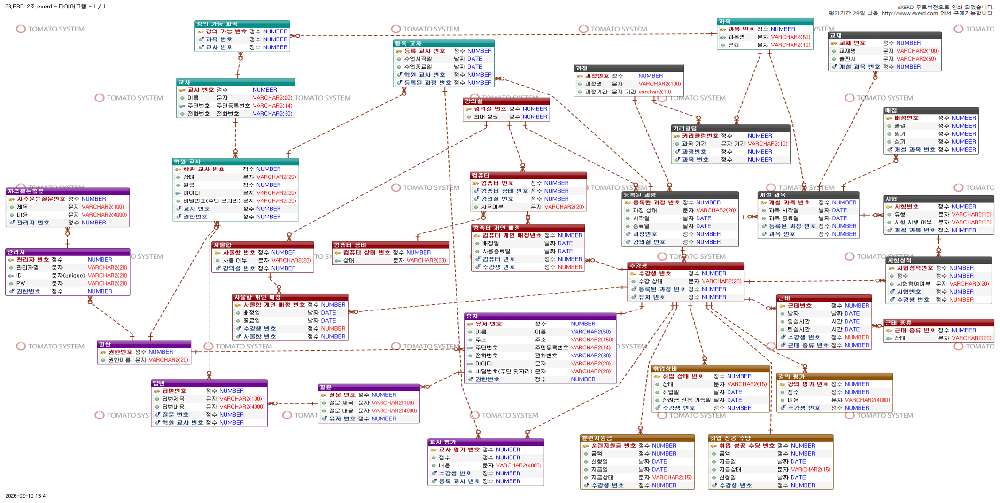
01. 전체 테이블 설계도
초기 요구사항 분석을 바탕으로 설계된 교육센터 운영 시스템의 전체 ERD입니다. 엔티티 간의 관계를 어떻게 설계해야 하는지 경험할 수 있었습니다.
02. 협업 및 문서화 도구
Figma를 이용하여 전체 시스템의 흐름과 순서도를 작성했습니다. 또한 Google Sheets를 활용해 팀원 간 업무를 분담하고 진행 상태를 실시간으로 공유했습니다.
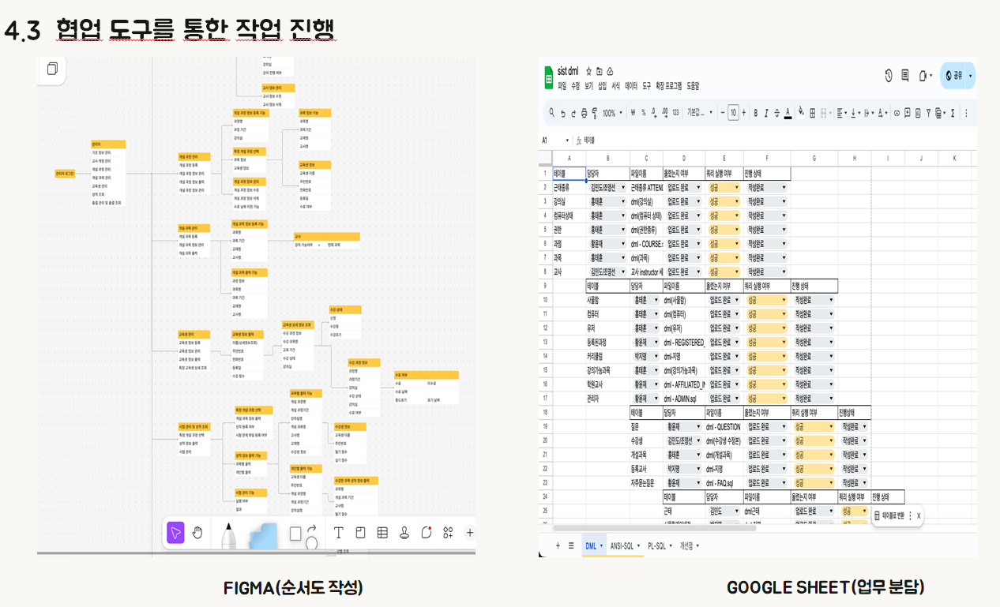
03. 테이블 깊이 (Depth) 설계도
테이블 간의 외래키(FK) 참조 관계를 고려하여 데이터 입력 및 삭제 시 의존성 문제가 발생하지 않도록 5단계의 계층 구조(Depth)를 한 눈에 알아볼 수 있게 설계도를 작성하였습니다. 이를 통해 순차적으로 더미데이터를 삽입하였습니다.
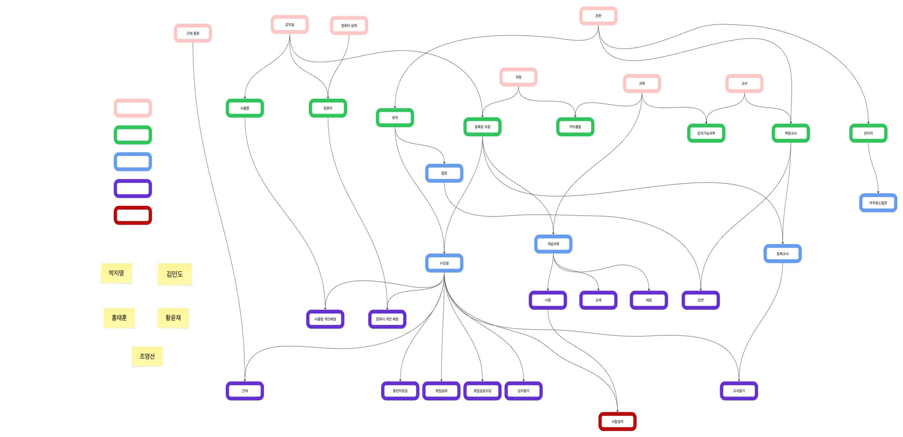
04. 관계의 재정의
초기 설계에서는 '취업성공수당' 테이블이 '취업상태' 테이블에 종속되어 있었습니다. 하지만 비즈니스 로직상 취업성공수당은 수강생 본인에게 단 한 번만 지급됩니다.
취업상태 컬럼이 변경되는 시점에 수당이 지급되긴 하지만, 일회성 지급이라는 점을 DB단계에서 명확하게 설정할 수 있고 테이블 관계를 변경하더라도 상태컬럼 변경에 따른 지급 로직에는 영향이 없기 때문에 수강생 테이블과 1:1 관계로 재연결하여 DB 구조적 단계에서 일회성 지급 제약을 구현했습니다.
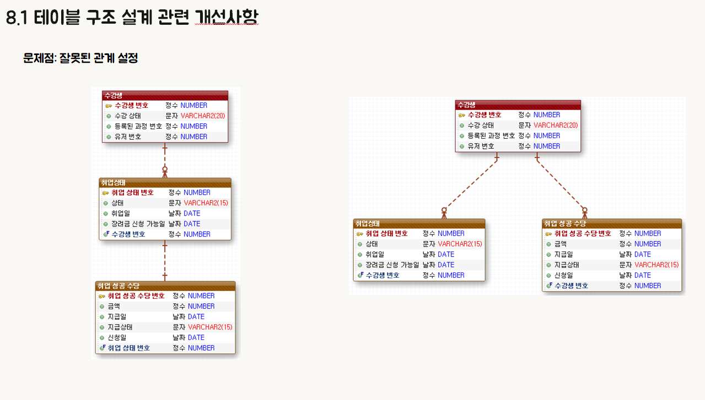
05. 정규화 vs 반정규화 고찰
시험 테이블 설계 시, '유형'이라는 상태 코드로 필기/실기를 구분(정규화)하면 NULL을 줄이고 확장에 용이하다는 장점이 있습니다.
하지만 본 시스템의 특성상 새로운 시험 유형이 추가될 가능성이 매우 적고, 성적 조회 시 필기와 실기 점수를 동시에 호출하는 경우가 압도적으로 많습니다. 따라서 조회 성능 향상과 쿼리 단순화를 위해 필기/실기 컬럼을 각각 분리하는 반정규화 모델을 최종 채택했습니다.
또한 컴퓨터의 경우 해당 강의실에 배정되지 않고 창고에 있는 경우를 고려하여 NOT NULL 제약을 제거하므로써 간단히 해결하였습니다.
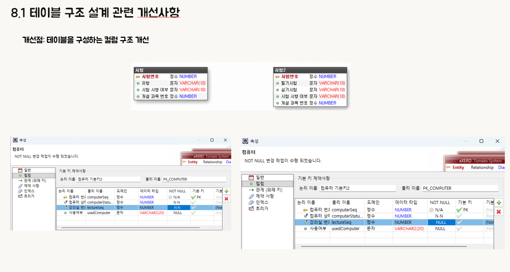
06. 제약 조건 최적화 (CHECK)
과목별 배점(필기, 실기, 출석)의 합이 100점을 초과하지 않도록 검증하는 로직을 고민했습니다. 초기에는 트리거(Trigger)를 사용하였으나, 다른 간단하고 좋은 방법이 있다는 것을 알게되었습니다.
테이블 단계에서 CHECK (필기+실기+출석 <= 100) 제약 조건을 만들어, 무거운 트리거 대신 가볍고 간단하게 리팩토링하였습니다.
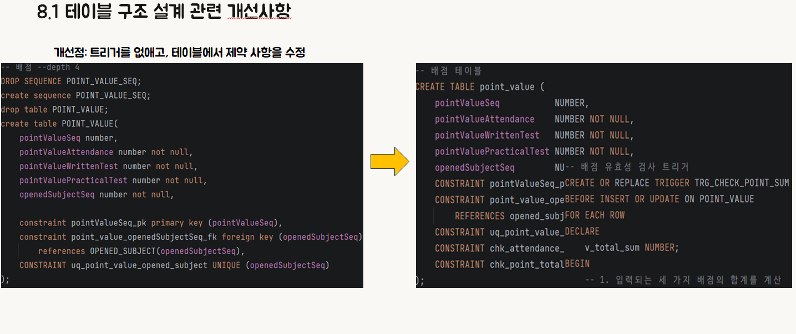
07. PL/SQL: 중도 탈락 처리 로직
출석률 80% 미만인 수강생의 상태를 '중도포기'로 일괄 자동 업데이트하는 프로시저(proc_handle_course_drop)를 구현했습니다.
근태 산정 방식(지각 3회 누적 시 미출석 1회로 환산)을 처리하기 위해 함수(func_calculate_absence)를 만들어 프로시저 내부에서 호출합니다.
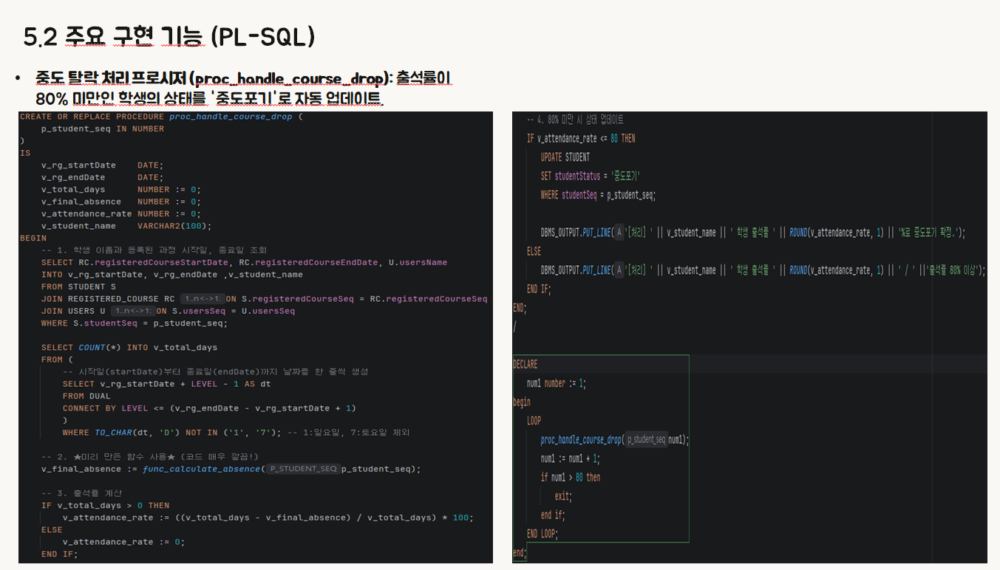
08. PL/SQL: 정원 초과 방지 트리거
수강생 등록 시 발생하는 동시성 이슈와 데이터 정합성을 보장하기 위해 정원 확인용 트리거를 설계했습니다.
수강생이 INSERT 되기 직전에 해당 강의실의 정원(Capacity)과 현재 등록 인원을 실시간으로 조회·비교하여, 정원이 초과될 경우 즉시 RAISE_APPLICATION_ERROR를 발생시켜 잘못된 데이터 삽입을 차단합니다.
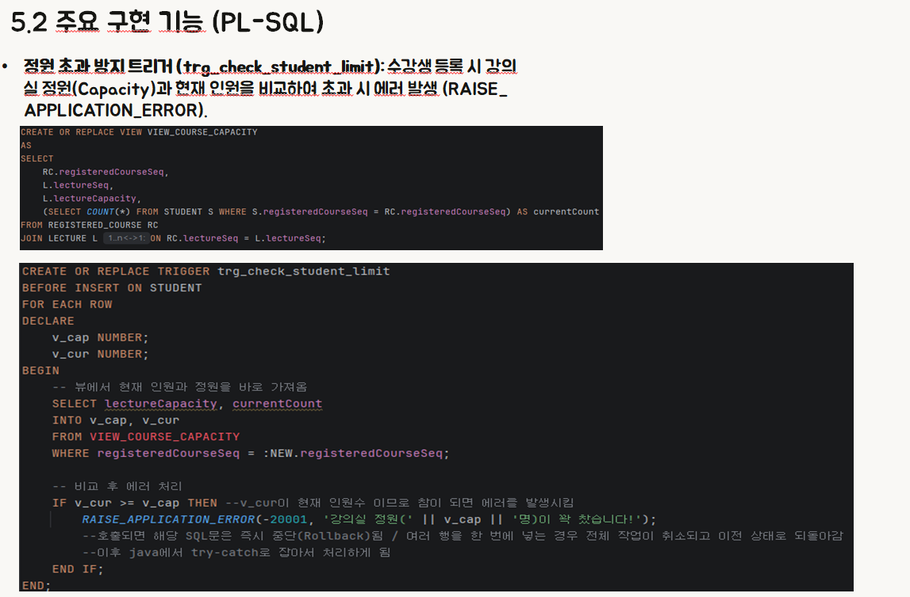
09. 프로젝트 후기
이번 프로젝트로 SQL, PL/SQL 활용 능력과 ERD 설계 역량을 키울 수 있었습니다. 조인과 서브쿼리에 대한 이해도가 높아졌고, 막연했던 PL/SQL도 직접 구현해보며 자신감을 얻었습니다.
앞으로 배워야 할 것들이 너무나도 많다는 점에 부담도 느꼈지만, 한 번에 완벽하기보단 꾸준히 성장하면 된다고 다짐하고 믿는 것이 중요하다고 느꼈습니다. 의견 차이도 있었지만 서로 소통하고 조율하며 협업의 중요성을 배웠고, 혼자서라면 끝까지 해내지 못할 일도 함께할 팀원들이 있다면 해낼 수 있다는 점을 피부로 느꼈습니다.
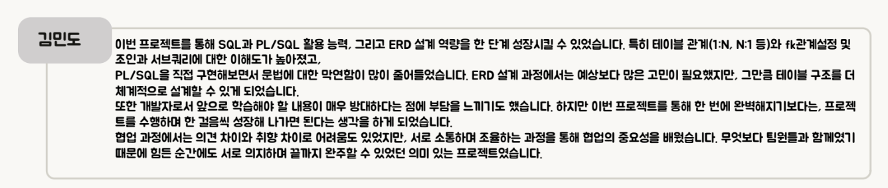